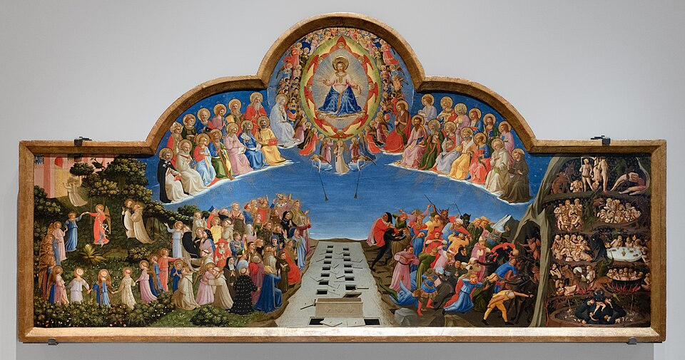

v. 1431
Le Jugement dernier
À regarder
Le Christ au centre, les tombeaux ouverts, les élus et les damnés, la ronde des bienheureux.
Le Christ au centre, les tombeaux ouverts, les élus et les damnés, la ronde des bienheureux.
À comprendre
Une structure encore médiévale, mais un espace plus crédible et des corps qui gagnent en présence.
Une structure encore médiévale, mais un espace plus crédible et des corps qui gagnent en présence.